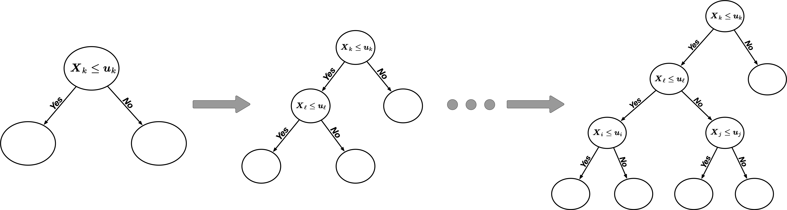
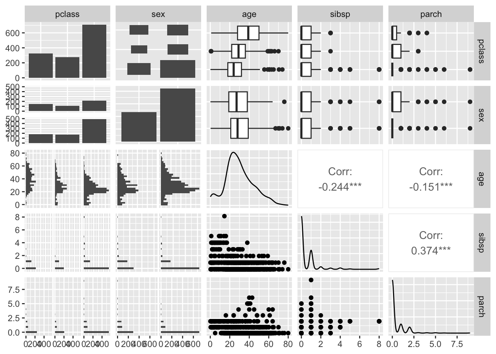
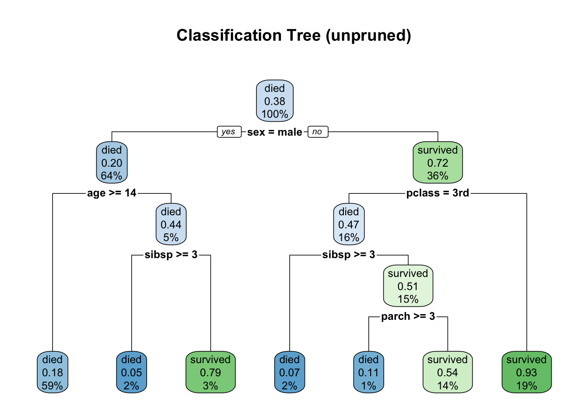
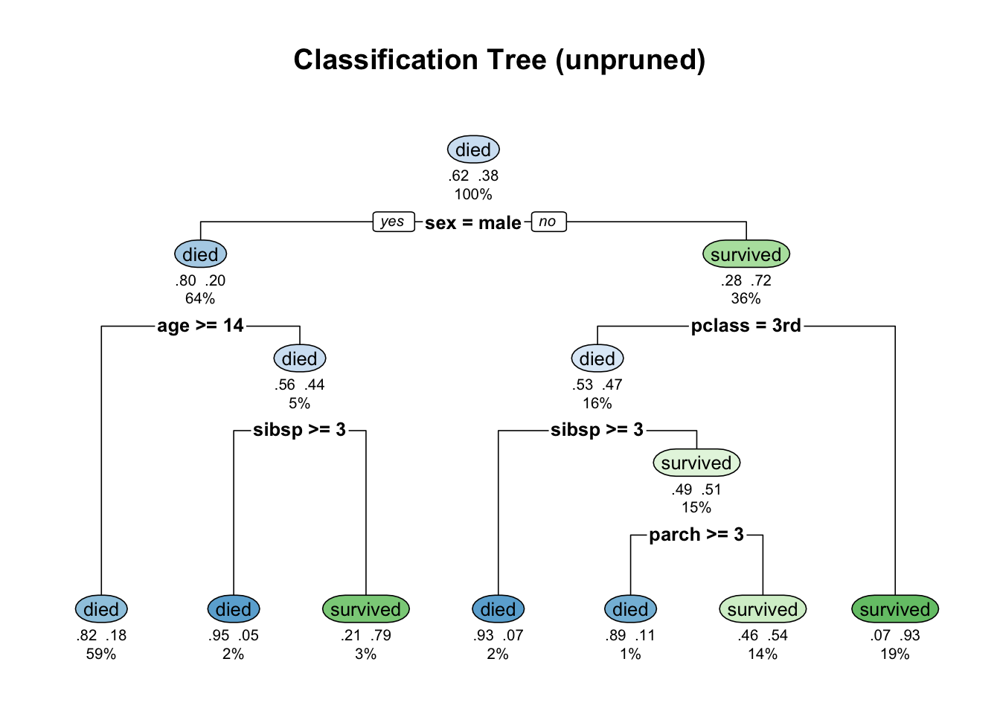
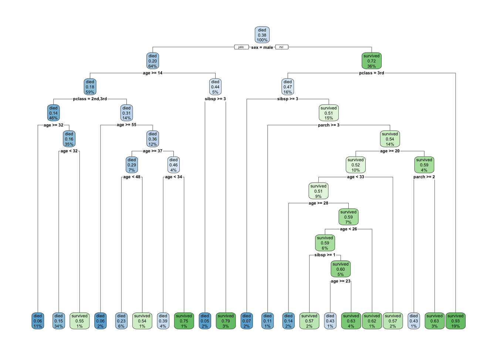
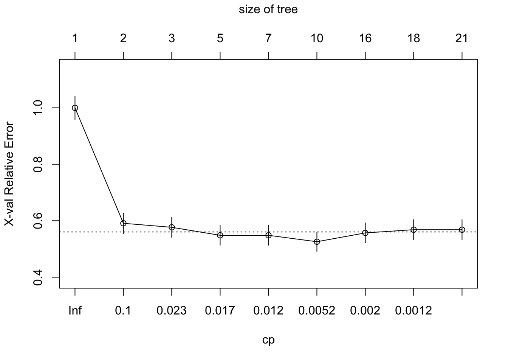
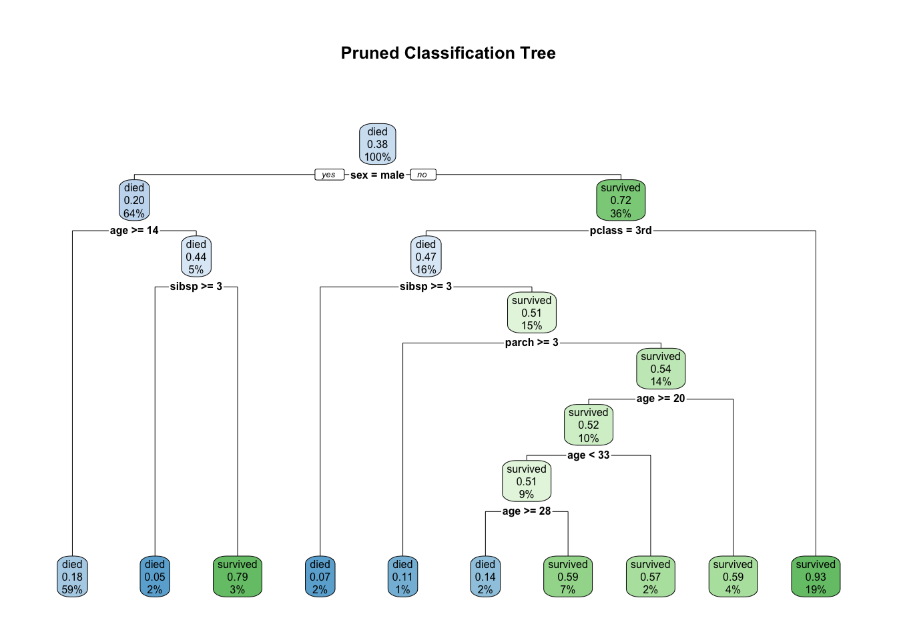
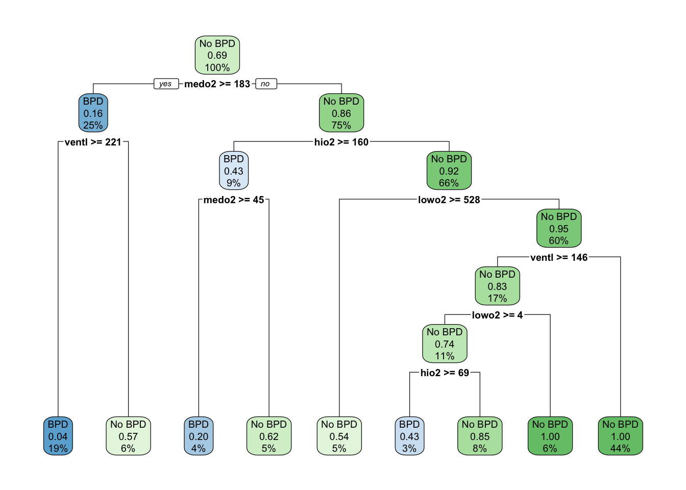

library(rpart)
library(rpart.plot)
data(ptitanic)
df = ptitanic
head(df)10 Decision Trees
10.1 Learning goals
By the end of this section, you should be able to:
- Explain the basic idea of decision trees
- Understand the idea of classification tree.
- Define impurity measures (misclassification error, Gini index, cross-entropy).
- Fit and interpret a classification tree using R package
rpart. - Visualize trees and decision boundaries.
- Explain overfitting and why pruning / cross-validation are needed.
10.2 Introduction
Supervised learning
- Supervised learning: We train the model using a dataset where we already know the correct answers (the “labels”).
- Training data: A datset that is used to train (or fit) the model (in order to estimate unknown model parameters).
- Testing data: A dataset that is not used for training a model but used to evaluate the accuracy of the model.
Decision trees
- Decision trees are essentially flowcharts of decisions that help us predict an outcome.
- Decision trees are supervised learning models used for:
- Classification (predicting categories)
- Regression (predicting numeric outcomes)
- The term decision tree refers to the general structure
- A classification tree is a specific type of decision trees where the target variable is a categorical variable.
- A regression tree is another specific type of decision trees where the target variable is a numerical variable.
- We often use classification and regression trees with the acronym CART to refer to the two types of statistical models/algorithms based on decision trees.
- In this course, we only focus on classification trees.
10.3 Classification Tree
10.3.1 Basic Idea
Basic idea of a CART algorithm
- Initialization: All observations are in one node at the top of the tree.
- Recursion for each node:
- Pick a binary decision rule based on variables.
- Split a node into two child nodes based on the selected decision rule
- Recursion stops when no further gain is achieved, or some pre-set stopping rules are met.

Tree terminologies
- Root node: The starting point; represents the entire dataset.
- Internal node: A node that splits the data based on a feature test (a decision).
- Branch/edge: The outcome of the test (e.g., ‘Yes’ or ‘No’).
- Leaf node (terminal node): A node that has no descendants (child nodes).
- We need to define the decision rule as the splitting criterion to split the node. In this course, we focus on the concept Gini index that is used in the original CART algorithm.
- We also need to determine when the tree stops splitting.
10.3.2 Splitting Criterion
- The CART algorithm determines the optimal split by searching for the cutoff (or split point) that yields the maximum reduction in impurity (or maximum information gain).
- This is equivalent to finding the split that results in the lowest weighted average impurity of the resulting child nodes.
Definition of Gini index
Definition: The Gini index G for a given node m containing observations from K classes is defined as G_m:= \sum_{i=1}^K \sum_{j\neq i} p_i p_j = 1 - \sum_{i=1}^K p_i^2
- K is the total number of distinct classes (categories or labels) in the target variable.
- p_i is the proportion of observations in node m that belong to class i with p_1 + p_2 + \ldots + p_K = 1.
- The maximum value of the Gini Index occurs at p_i = 1/K for all i=1,2, \ldots, K.
- The minimum value of the Gini Index is 0.
- G_m\approx 0: The node is approximately perfectly pure. All observations in the node nearly belong to the same class.
- G_m > .5: The node is viewed as highly impure (mixed). Observations are distributed roughly equally across multiple classes.
- Gini index quantifies the purity (or homogeneity) of a node in a decision tree.
- The Gini index, also called Gini impurity, is a measure in the construction of decision trees to evaluate how often a randomly selected element from a data set would be incorrectly labelled if it were labeled according to the distribution of the labels in the data set.
Determination of Split
- For any potential split point c on a variable X, we divide the data into the left-child node and the right child node.
- The split point c is chosen to minimize the weighted Gini index
- For each continuous variable x\in [c_0, c_d],
- we divide the range of variable into d intervals of width w specified by c_0, c_0 + w, c_0 + 2w, \ldots, c_d;
- we then choose the cutoff (or split point) c_i that maximizes the impurity of the child nodes.
- For ordinal variables, we examine each possible cutoff.
- For nominal variables, we put some categories in the left child and the others in the right child.
10.3.3 Working Example with the Titanic Data
Working Example with the
iris Data
The Titanic dataset contains information about the passengers aboard the RMS Titanic, which sank after striking an iceberg on April 15, 1912, during its maiden voyage from Southampton (UK) to New York City. Out of 2,224 passengers and crew, more than 1,500 people died, making it one of the deadliest peacetime maritime disasters.
We will use the ptitanic dataset from the rpart.plot package with 1046 observations on 6 variables
pclass: passenger class, unordered factor: 1st 2nd 3rdsurvived: died or survivedsex: male or femaleage: in yearssibsp: number of siblings or spouses aboardparch: number of parents or children aboard- Goal: We want to predict
survivedbased on the other 5 variables.
df$age = as.numeric(ptitanic$age)
df$sibsp = as.integer(ptitanic$sibsp)
df$parch = as.integer(ptitanic$parch)library(GGally)
library(dplyr)
df %>%
select(-survived) %>%
ggpairs()
Train/Test data
set.seed(4750)
n = nrow(df)
frac = 0.7 # 70% for training
train_idx = sample(seq_len(n), size = floor(frac * n))
df_train = df[train_idx, ]
df_test = df[-train_idx, ]
dim(df_train)[1] 916 6dim(df_test)[1] 393 6
Fit a classification tree
fit = rpart(survived ~ ., data = df_train)
print(fit)n= 916
node), split, n, loss, yval, (yprob)
* denotes terminal node
1) root 916 352 died (0.61572052 0.38427948)
2) sex=male 590 117 died (0.80169492 0.19830508)
4) age>=13.5 545 97 died (0.82201835 0.17798165) *
5) age< 13.5 45 20 died (0.55555556 0.44444444)
10) sibsp>=2.5 21 1 died (0.95238095 0.04761905) *
11) sibsp< 2.5 24 5 survived (0.20833333 0.79166667) *
3) sex=female 326 91 survived (0.27914110 0.72085890)
6) pclass=3rd 149 70 died (0.53020134 0.46979866)
12) sibsp>=2.5 14 1 died (0.92857143 0.07142857) *
13) sibsp< 2.5 135 66 survived (0.48888889 0.51111111)
26) parch>=2.5 9 1 died (0.88888889 0.11111111) *
27) parch< 2.5 126 58 survived (0.46031746 0.53968254) *
7) pclass=1st,2nd 177 12 survived (0.06779661 0.93220339) *
Visualizing the tree
g = rpart.plot(fit,
main = "Classification Tree (unpruned)"
)
g = rpart.plot(
fit,
type = 2, # split labels on branches
extra = 104, # show class, prob, and percentage of obs.
under = TRUE, # show text information under the box
main = "Classification Tree (unpruned)"
)
- How to read a node?
- Each node shows the predicted class (
diedorsurvived), predicted probability of survival, and the percentage of observations in the node - For the root node, it shows the percentage of observations that corresponds to
survived(here it is .38) in the first figure above. In the second figure, it shows two probabilities (0.62, 0.38), corresponding to two classesdiedandsurvived.
- In the first figure (with default setting in
rpart.plot), the probability shown in each node always refers to thesurvivedobservations. .82 .18(lowest left node): estimated probabilities for each class:diedorsurvived59%(lowest left node): percentage of training observations in that node
- Each node shows the predicted class (
- At each node, the algorithm searched over all predictors and possible cut points to find the split that maximally reduces node impurity (i.e., inhomogeneity). We will talk about this concept in what follows.
Interpretation of splits
- Root split (split at tree depth 0):
sex = male- left child: all observations with
sex = male - right child: all observations with
sex = female
- left child: all observations with
- A split at tree depth 1 (on the left child):
age >= 14- This separates remaining observations further into two classes (
diedorsurvived) with the constrain that its left child corresponds toage >= 14and its right child corresponds toage < 14.
- This separates remaining observations further into two classes (
10.3.4 Pruning The Tree
fit1 = rpart(survived ~ ., data = df_train, cp=0.00001)
rpart.plot(fit1)
- As we can see, the fitted classification tree has a deeper tree structure. The question then becomes whether this deeper tree is necessary (brings benefits).
- Deep trees (those with large number of tree nodes) can overfit. To address this issue,
rpartuses cost-complexity pruning controlled bycp(complexity parameter).
overfit vs underfit
- A statistical model or machine learning model overfits the data if the model’s error on training data is very low (often near zero) and simultaneously the model’s error on testing data is much higher than the training error. Overfitting is often implied by high training accuracy and low testing accuracy.
- Overfitting is often a characteristics of overly complex models. In decision trees, this means the tree with too many deep branches.
- Underfitting is the opposite of overfitting.
- In general, we want to build a statistical model/machine learning model that balance model complexity and testing accuracy.
- This is achieved by cross-validation (CV):
- CV is used during training to estimate how well the model will generalize to unseen data (testing data).
- CV divides the data into training data and testing data.
Let’s first look at the fitting outputs from fit1, which gives the complexity parameter (CP) and cross-validation error.
printcp(fit1)
Classification tree:
rpart(formula = survived ~ ., data = df_train, cp = 1e-05)
Variables actually used in tree construction:
[1] age parch pclass sex sibsp
Root node error: 352/916 = 0.38428
n= 916
CP nsplit rel error xerror xstd
1 0.40909091 0 1.00000 1.00000 0.041824
2 0.02556818 1 0.59091 0.59091 0.036021
3 0.01988636 2 0.56534 0.57670 0.035711
4 0.01420455 4 0.52557 0.54830 0.035064
5 0.00946970 6 0.49716 0.54830 0.035064
6 0.00284091 9 0.46875 0.52557 0.034519
7 0.00142045 15 0.45170 0.55682 0.035262
8 0.00094697 17 0.44886 0.56818 0.035521
9 0.00001000 20 0.44602 0.56818 0.035521The table includes:
nsplit: number of splitsrel error: training error (relative to root node)xerror: cross-validated errorxstd: standard error ofxerror
plotcp(fit1)
- Note: a horizontal line in the figure above is drawn 1 standard error above the minimum of the curve.
To select the best CP, we could use
best_cp = fit1$cptable[which.min(fit1$cptable[, "xerror"]), "CP"]
best_cp[1] 0.002840909fit1_pruned = prune(fit1, cp = best_cp)
rpart.plot(
fit1_pruned,
main = "Pruned Classification Tree"
)
How to interpte the results?
- In general, there is a clear class boundaries due to
sex=female,Pclass<3, andAge<14. - Compared to males, females have a higher survival rate. This makes sense because
- Many women and children were evacuated first.
- 1st and 2nd class passengers had much better survival chances
- Proximity to lifeboats
- Better access to upper decks
- Children had higher survival rates
- Often evacuated first with their families
Randomness in cross-validation
- The problem with reducing the
xerroris that the cross-validation (CV) error is a random quantity. This is because CV randomly divides the data inrpart. - There is no guarantee that if we were to fit the sequence of trees again using a different random seed that the same tree would minimize the cross-validation error.
- A more robust alternative to minimum cross-validation error is to use the one standard deviation rule: choose the smallest tree whose cross-validation error is within one standard error of the minimum. Depending on how we define this there are two possible choices.
- The first tree whose point estimate of the cross-validation error falls within the \pm 1
xstdof the minimum. - On the other hand, the standard error lower limit of the tree of size three is within +1
xstdof the minimum.
- The first tree whose point estimate of the cross-validation error falls within the \pm 1
10.3.5 Model Evaluation
For classification problems, we could evaluate the performance the model by looking at classification errors, which are defined through a confusion matrix. A confusion matrix is a table that summarizes how well a classification model performs by comparing the model’s predicted classes with the actual (true) classes.
Confusion Matrix
- A confusion matrix is a square table where:
- Rows represent the true classes
- Columns represent the predicted classes
- Each cell shows the number of observations that fall into that true–predicted combination.
Example of Binary Confusion Matrix
Suppose a model predicts whether a passenger survived the Titanic disaster.
| True Predicted | Predicted: Survived | Predicted: Died |
|---|---|---|
| True: Survived | TP (True Positives) | FN (False Negatives) |
| True: Died | FP (False Positives) | TN (True Negatives) |
- True Positive (TP): correctly predicted survived.
- True Negative (TN): correctly predicted died.
- False Positive (FP) (Type I error): predicted survived but actually died. (A “false alarm”)
- False Negative (FN) (Type II error): predicted died but actually survived. (A “miss”)
- The table above does not require strict ordering in columns or rows. One could switch the column
Predicted: Survivedand the columnPredicted: Diedbut the meaning/interpretation should also be defined appropriately.
We first show the prediction results and confusion matrix based on training data.
pred_class_train = predict(fit1_pruned,
type="class"
)
conf_mat_train = table(Predicted=pred_class_train, True=df_train$survived)
conf_mat_train True
Predicted died survived
died 501 102
survived 63 250We can also get mis-classification errors using the following R code
prob.results = predict(fit1_pruned)
head(prob.results) died survived
[1,] 0.06779661 0.9322034
[2,] 0.06779661 0.9322034
[3,] 0.82201835 0.1779817
[4,] 0.82201835 0.1779817
[5,] 0.40625000 0.5937500
[6,] 0.40625000 0.5937500The confusion matrix can also be represented in terms of probabilities:
prop.table(table(Predicted=pred_class_train,
True=df_train$survived)) True
Predicted died survived
died 0.54694323 0.11135371
survived 0.06877729 0.27292576pred_class = predict(fit1_pruned, newdat=df_test, type="class")
conf_mat = table(Predicted=pred_class, True=df_test$survived)
conf_mat True
Predicted died survived
died 215 42
survived 30 106To show probabilities in confusion matrix, one can use the following code
prop.table(conf_mat) True
Predicted died survived
died 0.54707379 0.10687023
survived 0.07633588 0.26972010
Common Metrics Derived from the Confusion Matrix
- Accuracy: The proportion of total predictions that were correct. \text{Accuracy} = \frac{TP + TN}{TP + TN + FP + FN}
- Sensitivity / Recall (True Positive Rate): Out of all actual positives, how many did the model correctly identify? (Focuses on avoiding Misses) \text{Recall} = \frac{TP}{TP + FN}
- Specificity (True Negative Rate): Out of all actual negatives, how many did the model correctly identify? (The opposite of Recall, focusing on the negative class) \text{Specificity} = \frac{TN}{TN + FP}
- Precision: Out of all predicted positives, how many were actually correct? (Focuses on avoiding False Alarms) \text{Precision} = \frac{TP}{TP + FP}
accuracy <- mean(pred_class == df_test$survived)
accuracy[1] 0.8167939TP = conf_mat[1,1]
FP = conf_mat[2,1]
FN = conf_mat[1,2]
TN = conf_mat[2,2]
Accuracy = (TP + TN) / (TP + TN + FP + FN)
Recall = TP / (TP + FN)
Specificity = TN / (TN + FP)
Precision = TP / (TP + FP)
cat(" Accuracy: ", Accuracy, "\n",
"Recall: ", Recall, "\n",
"Specificity: ", Specificity, "\n",
"Precision: ", Precision) Accuracy: 0.8167939
Recall: 0.8365759
Specificity: 0.7794118
Precision: 0.87755110.4 Exercise
Bronchopulmonary Dysplasia (BPD) Study
This example is from Biostatistics Casebook (pp. 104-119)
Training samples consist of all infants at the Stanford Medical Center between 1962 and 1973 who were diagnosed with respiratory distress syndrome (RDS) and received ventilatory assistance for at least 24 hours (except one infant with incomplete records). Most of these babies were born prematurely and had underdeveloped lungs. Some breathing assistance involving elevated levels of oxygen was needed to keep the babies alive. Bronchiopulmonary dysplasia (BPD) is deterioration of lung tissue (scarring) in infants exposed to a high level of oxygen. A panel of physicians reviewed each case to determine if BPD was present.
Infants who did not survive for at least 72 hours were excluded from the analysis because there was not enough time for BPD to develop. One additional infant was excluded due to incomplete records. This reduced the sample from 299 to 248 babies, including 78 with BPD and 170 without BPD. The dataset is available in the file bpd.csv.
General background variables:
Sex(0=female, 1=male)YOB: year of birth (coded from 62 to 73)APGAR: one minute APGAR score (0 to 10 with 10 as the most healthy)GEST: gestational age (weeks × 10)BWT: birth weight (grams)AGSYM: age at onset of RDS (hours × 10)RDS: severity of initial X-ray for RDS (0 to 5=most severe)AGVEN: Age at onset of ventilation (hours)VENTL: total hours on the ventilatorLOWO2: hours of exposure to (21-39%) levels of oxygenMEDO2: hours of exposure to (40-79%) levels of oxygenHIO2: hours of exposure to (80-100%) levels of oxygenINTUB: hours of endotracheal intubation- Response variable: BPD (coded 1=yes, 2=no)
The goal is to perform classification using the classification tree method.
View Solution
First convert categorical variables like sex and rds to factors. There is no need to convert categorical variables into zero-one variables, because it would not change the tree that is produced. Read the data into a data frame and create factors.
View Solution
bpdr = read.csv("bpd.csv", header=T)
bpdr$sex = as.factor(bpdr$sex)
bpdr$rds = as.ordered(bpdr$rds)
head(bpdr)Create a factor to distinguish the two populations with labels “BPD” and “No BPD”.
View Solution
bpdr$y[bpdr$bpd==1] = 'BPD'
bpdr$y[bpdr$bpd==2] = 'No BPD'
bpdr$y = as.factor(bpdr$y)Set a seed for starting a random number generator to generate random numbers used in crossvalidations to prune trees and estimate misclassification probabilities.
View Solution
set.seed(4750)
bpd.rp = rpart(y ~ sex+yob+gest+bwt+agsym+agven+intub+
ventl+lowo2+medo2+hio2+rds,
data=bpdr, cp=0.0001)
summary(bpd.rp)Call:
rpart(formula = y ~ sex + yob + gest + bwt + agsym + agven +
intub + ventl + lowo2 + medo2 + hio2 + rds, data = bpdr,
cp = 1e-04)
n= 248
CP nsplit rel error xerror xstd
1 0.538461538 0 1.0000000 1.0000000 0.09374569
2 0.038461538 1 0.4615385 0.6666667 0.08218816
3 0.025641026 3 0.3846154 0.5256410 0.07499920
4 0.003205128 4 0.3589744 0.5128205 0.07425765
5 0.000100000 8 0.3461538 0.5128205 0.07425765
Variable importance
medo2 intub ventl lowo2 hio2 agven yob
31 19 19 13 10 6 1
Node number 1: 248 observations, complexity param=0.5384615
predicted class=No BPD expected loss=0.3145161 P(node) =1
class counts: 78 170
probabilities: 0.315 0.685
left son=2 (62 obs) right son=3 (186 obs)
Primary splits:
medo2 < 183 to the right, improve=45.43011, (0 missing)
ventl < 220.5 to the right, improve=43.28307, (1 missing)
intub < 271 to the right, improve=39.85744, (0 missing)
lowo2 < 437.5 to the right, improve=29.52134, (0 missing)
hio2 < 153 to the right, improve=17.09879, (0 missing)
Surrogate splits:
intub < 286.5 to the right, agree=0.871, adj=0.484, (0 split)
ventl < 301.5 to the right, agree=0.863, adj=0.452, (0 split)
lowo2 < 429 to the right, agree=0.831, adj=0.323, (0 split)
agven < 64.5 to the right, agree=0.786, adj=0.145, (0 split)
hio2 < 305 to the right, agree=0.774, adj=0.097, (0 split)
Node number 2: 62 observations, complexity param=0.02564103
predicted class=BPD expected loss=0.1612903 P(node) =0.25
class counts: 52 10
probabilities: 0.839 0.161
left son=4 (48 obs) right son=5 (14 obs)
Primary splits:
ventl < 220.5 to the right, improve=6.034381, (1 missing)
intub < 221.5 to the right, improve=4.680002, (0 missing)
hio2 < 45.5 to the right, improve=4.466501, (0 missing)
medo2 < 443.5 to the right, improve=4.181601, (0 missing)
lowo2 < 434 to the right, improve=1.743506, (0 missing)
Surrogate splits:
intub < 221.5 to the right, agree=0.984, adj=0.929, (1 split)
medo2 < 243 to the right, agree=0.820, adj=0.214, (0 split)
agven < 129 to the left, agree=0.803, adj=0.143, (0 split)
lowo2 < 1928 to the left, agree=0.787, adj=0.071, (0 split)
hio2 < 0.5 to the right, agree=0.787, adj=0.071, (0 split)
Node number 3: 186 observations, complexity param=0.03846154
predicted class=No BPD expected loss=0.1397849 P(node) =0.75
class counts: 26 160
probabilities: 0.140 0.860
left son=6 (23 obs) right son=7 (163 obs)
Primary splits:
hio2 < 159.5 to the right, improve=9.500455, (0 missing)
ventl < 223.5 to the right, improve=5.863258, (0 missing)
intub < 229 to the right, improve=4.550538, (0 missing)
lowo2 < 321 to the right, improve=3.948499, (0 missing)
yob < 68.5 to the left, improve=2.688830, (0 missing)
Node number 4: 48 observations
predicted class=BPD expected loss=0.04166667 P(node) =0.1935484
class counts: 46 2
probabilities: 0.958 0.042
Node number 5: 14 observations
predicted class=No BPD expected loss=0.4285714 P(node) =0.05645161
class counts: 6 8
probabilities: 0.429 0.571
Node number 6: 23 observations, complexity param=0.03846154
predicted class=BPD expected loss=0.4347826 P(node) =0.09274194
class counts: 13 10
probabilities: 0.565 0.435
left son=12 (10 obs) right son=13 (13 obs)
Primary splits:
medo2 < 45 to the right, improve=1.950502, (0 missing)
rds splits as LLLLRRR, improve=1.950502, (0 missing)
agven < 32.5 to the right, improve=1.715062, (0 missing)
lowo2 < 4.5 to the right, improve=1.715062, (0 missing)
yob < 68.5 to the left, improve=1.590062, (0 missing)
Surrogate splits:
agven < 37.5 to the right, agree=0.826, adj=0.6, (0 split)
lowo2 < 17.5 to the right, agree=0.783, adj=0.5, (0 split)
intub < 172 to the left, agree=0.739, adj=0.4, (0 split)
ventl < 169.5 to the left, agree=0.739, adj=0.4, (0 split)
yob < 65.5 to the left, agree=0.696, adj=0.3, (0 split)
Node number 7: 163 observations, complexity param=0.003205128
predicted class=No BPD expected loss=0.0797546 P(node) =0.6572581
class counts: 13 150
probabilities: 0.080 0.920
left son=14 (13 obs) right son=15 (150 obs)
Primary splits:
lowo2 < 527.5 to the right, improve=4.1181750, (0 missing)
ventl < 250.5 to the right, improve=1.9012610, (0 missing)
intub < 433.5 to the right, improve=1.7798600, (0 missing)
medo2 < 82.5 to the right, improve=1.6898960, (0 missing)
gest < 352.5 to the left, improve=0.5030691, (1 missing)
Surrogate splits:
intub < 390 to the right, agree=0.945, adj=0.308, (0 split)
ventl < 288.5 to the right, agree=0.939, adj=0.231, (0 split)
Node number 12: 10 observations
predicted class=BPD expected loss=0.2 P(node) =0.04032258
class counts: 8 2
probabilities: 0.800 0.200
Node number 13: 13 observations
predicted class=No BPD expected loss=0.3846154 P(node) =0.05241935
class counts: 5 8
probabilities: 0.385 0.615
Node number 14: 13 observations
predicted class=No BPD expected loss=0.4615385 P(node) =0.05241935
class counts: 6 7
probabilities: 0.462 0.538
Node number 15: 150 observations, complexity param=0.003205128
predicted class=No BPD expected loss=0.04666667 P(node) =0.6048387
class counts: 7 143
probabilities: 0.047 0.953
left son=30 (41 obs) right son=31 (109 obs)
Primary splits:
ventl < 146 to the right, improve=1.7369110, (0 missing)
intub < 148.5 to the right, improve=1.4771010, (0 missing)
medo2 < 158 to the right, improve=1.2132460, (0 missing)
agven < 4.5 to the left, improve=0.4336516, (0 missing)
rds splits as RRRRRLL, improve=0.4148485, (0 missing)
Surrogate splits:
intub < 146 to the right, agree=0.953, adj=0.829, (0 split)
lowo2 < 206 to the right, agree=0.753, adj=0.098, (0 split)
agven < 5.5 to the left, agree=0.747, adj=0.073, (0 split)
medo2 < 133 to the right, agree=0.747, adj=0.073, (0 split)
hio2 < 144.5 to the right, agree=0.733, adj=0.024, (0 split)
Node number 30: 41 observations, complexity param=0.003205128
predicted class=No BPD expected loss=0.1707317 P(node) =0.1653226
class counts: 7 34
probabilities: 0.171 0.829
left son=60 (27 obs) right son=61 (14 obs)
Primary splits:
lowo2 < 4 to the right, improve=1.2393860, (0 missing)
medo2 < 81.5 to the right, improve=1.2393860, (0 missing)
agven < 31 to the right, improve=1.1223610, (0 missing)
ventl < 155 to the left, improve=1.1223610, (0 missing)
yob < 69.5 to the left, improve=0.8294531, (0 missing)
Surrogate splits:
hio2 < 82.5 to the left, agree=0.805, adj=0.429, (0 split)
bwt < 1078 to the right, agree=0.707, adj=0.143, (0 split)
agven < 12.5 to the right, agree=0.707, adj=0.143, (0 split)
yob < 67.5 to the right, agree=0.683, adj=0.071, (0 split)
gest < 275 to the right, agree=0.683, adj=0.071, (0 split)
Node number 31: 109 observations
predicted class=No BPD expected loss=0 P(node) =0.4395161
class counts: 0 109
probabilities: 0.000 1.000
Node number 60: 27 observations, complexity param=0.003205128
predicted class=No BPD expected loss=0.2592593 P(node) =0.108871
class counts: 7 20
probabilities: 0.259 0.741
left son=120 (7 obs) right son=121 (20 obs)
Primary splits:
hio2 < 68.5 to the right, improve=1.8417990, (0 missing)
medo2 < 76 to the right, improve=1.5282650, (0 missing)
lowo2 < 99 to the left, improve=1.4158250, (0 missing)
ventl < 161.5 to the left, improve=0.9259259, (0 missing)
intub < 195 to the left, improve=0.7879528, (0 missing)
Surrogate splits:
yob < 68.5 to the left, agree=0.815, adj=0.286, (0 split)
gest < 390 to the right, agree=0.815, adj=0.286, (0 split)
bwt < 2976.5 to the right, agree=0.815, adj=0.286, (0 split)
ventl < 150 to the left, agree=0.815, adj=0.286, (0 split)
medo2 < 170.5 to the right, agree=0.815, adj=0.286, (0 split)
Node number 61: 14 observations
predicted class=No BPD expected loss=0 P(node) =0.05645161
class counts: 0 14
probabilities: 0.000 1.000
Node number 120: 7 observations
predicted class=BPD expected loss=0.4285714 P(node) =0.02822581
class counts: 4 3
probabilities: 0.571 0.429
Node number 121: 20 observations
predicted class=No BPD expected loss=0.15 P(node) =0.08064516
class counts: 3 17
probabilities: 0.150 0.850 Display the tree.
View Solution
rpart.plot(bpd.rp)
Display the classification training errors by this tree. Print a brief description of what happens at each node
View Solution
print(bpd.rp, digits=3)n= 248
node), split, n, loss, yval, (yprob)
* denotes terminal node
1) root 248 78 No BPD (0.3145 0.6855)
2) medo2>=183 62 10 BPD (0.8387 0.1613)
4) ventl>=220 48 2 BPD (0.9583 0.0417) *
5) ventl< 220 14 6 No BPD (0.4286 0.5714) *
3) medo2< 183 186 26 No BPD (0.1398 0.8602)
6) hio2>=160 23 10 BPD (0.5652 0.4348)
12) medo2>=45 10 2 BPD (0.8000 0.2000) *
13) medo2< 45 13 5 No BPD (0.3846 0.6154) *
7) hio2< 160 163 13 No BPD (0.0798 0.9202)
14) lowo2>=528 13 6 No BPD (0.4615 0.5385) *
15) lowo2< 528 150 7 No BPD (0.0467 0.9533)
30) ventl>=146 41 7 No BPD (0.1707 0.8293)
60) lowo2>=4 27 7 No BPD (0.2593 0.7407)
120) hio2>=68.5 7 3 BPD (0.5714 0.4286) *
121) hio2< 68.5 20 3 No BPD (0.1500 0.8500) *
61) lowo2< 4 14 0 No BPD (0.0000 1.0000) *
31) ventl< 146 109 0 No BPD (0.0000 1.0000) *Compute estimates of the misclassification probabilities
View Solution
bpd.prob = predict(bpd.rp)
head(bpd.prob) BPD No BPD
1 0.0000000 1.00000000
2 0.0000000 1.00000000
3 0.4285714 0.57142857
4 0.9583333 0.04166667
5 0.0000000 1.00000000
6 0.0000000 1.00000000Make a table of classification results based on confusion matrix.
View Solution
conf.matrix <- table(bpdr$y, predict(bpd.rp, type="class"))
conf.matrix
BPD No BPD
BPD 58 20
No BPD 7 163View Solution
# one can also show probabilities
prop.table(conf.matrix)
BPD No BPD
BPD 0.23387097 0.08064516
No BPD 0.02822581 0.65725806Code
conf.matrix <- table(bpdr$y, predict(bpd.rp, type="class"))
conf.matrix
BPD No BPD
BPD 58 20
No BPD 7 163